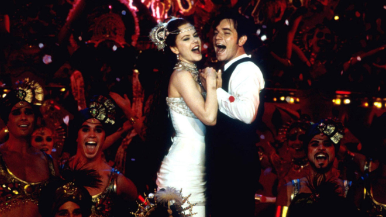
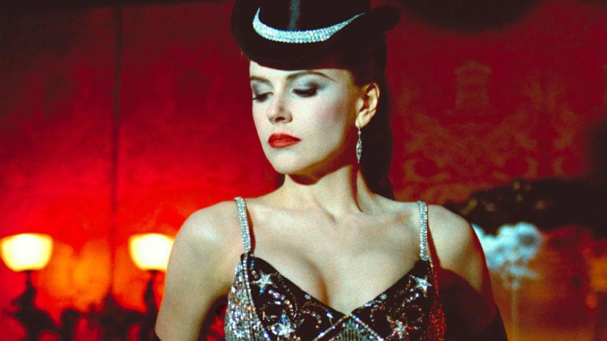

Trágico y predecible a partes iguales
Los actores convierten a Moulin Rouge en uno de los mejores musicales de la historia del cine
Moulin Rouge! es una explosión de sensaciones, un festín visual y sonoro que se siente tanto como un homenaje al cabaret clásico como una revisión audaz de los géneros cinematográficos. Dirigida por Baz Luhrmann, la película se ambienta en el París bohemio de finales del siglo XIX y narra la historia de un escritor romántico, Christian (Ewan McGregor), que se enamora de Satine (Nicole Kidman), una cortesana estrella en el famoso cabaret del Moulin Rouge. A pesar de que el argumento principal puede parecer predecible —un amor prohibido que lucha contra las circunstancias— lo que distingue a Moulin Rouge! es su estilo visual único y su enfoque musical.
"Come What May" cierra uno de los mejores musicales contemporáneos
La estética es un carnaval de luces, colores y movimiento, con una dirección de arte exuberante que se extiende desde los escenarios grandiosos hasta el vestuario que acentúa la opulencia decadente de la época. El uso de la música es uno de los pilares de la película, ya que Luhrmann incorpora canciones pop modernas en una narrativa histórica, creando un collage sonoro que transporta al espectador de inmediato a un mundo surrealista y anacrónico. Canciones de artistas como Elton John, Madonna y The Rolling Stones son reinterpretadas de manera vibrante, llevando el pop moderno a un escenario teatral que resuena con la energía y la emoción.
Nicole Kidman arrasa cada vez que aparece en cámara
Sin embargo, lo que algunos críticos han señalado como una desventaja de Moulin Rouge! es la constante sobrecarga sensorial que puede resultar abrumadora. Los saltos estilísticos y la rapidez de la edición pueden dejar a algunos espectadores desconectados, buscando más profundidad en los personajes o en el desarrollo de la trama. Aunque la película está diseñada para un público que disfruta del espectáculo y la fantasía, algunos de los momentos más emocionantes pueden ser eclipsados por la estética deslumbrante.
A pesar de sus críticas, Moulin Rouge! es un espectáculo innegablemente impresionante, lleno de corazón y pasión. El desempeño de Kidman, que combina elegancia y vulnerabilidad, junto con la actuación sincera de McGregor, crea una química que da vida a la historia. En su totalidad, la película es una experiencia sensorial que desafía las convenciones del cine musical y demuestra la capacidad de Luhrmann para innovar mientras mantiene una sensibilidad emocional que conecta con el espectador.
Ficha Técnica
- Director: Baz Luhrmann
- Género:Drama, Musical.
- Estreno: 2001
- Protagonistas: Ewan McGregor, Nicole Kidman
- Duración: 125 minutos